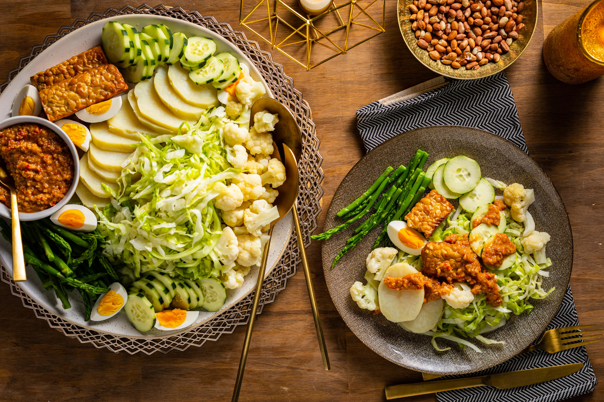
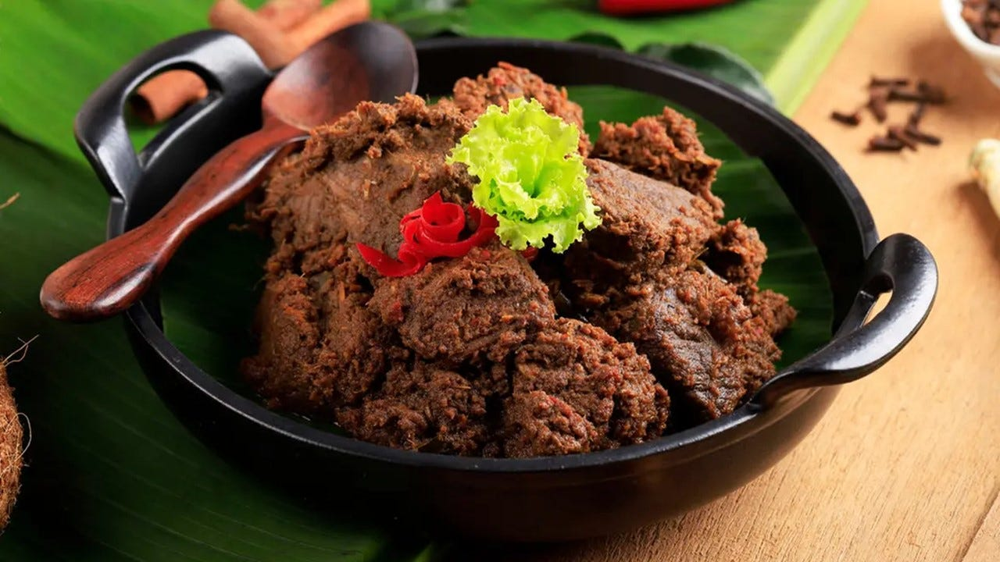
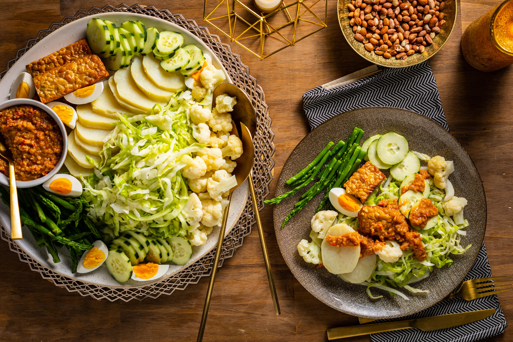
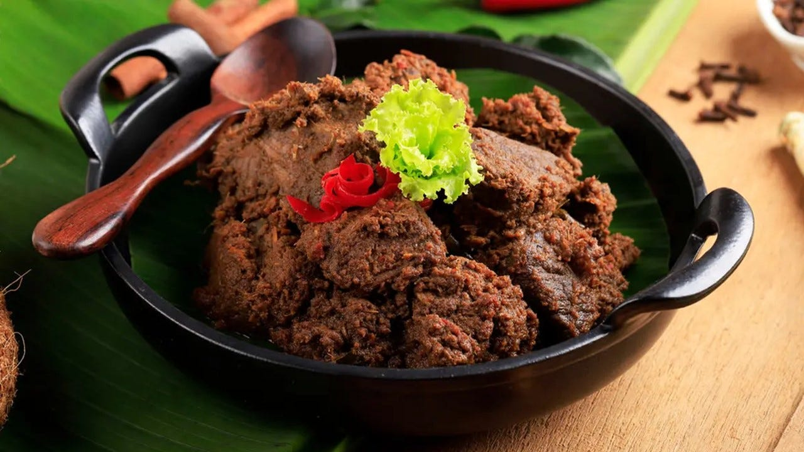
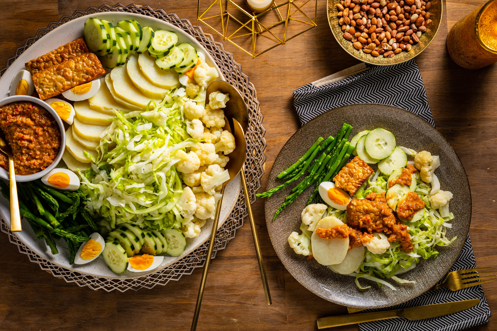
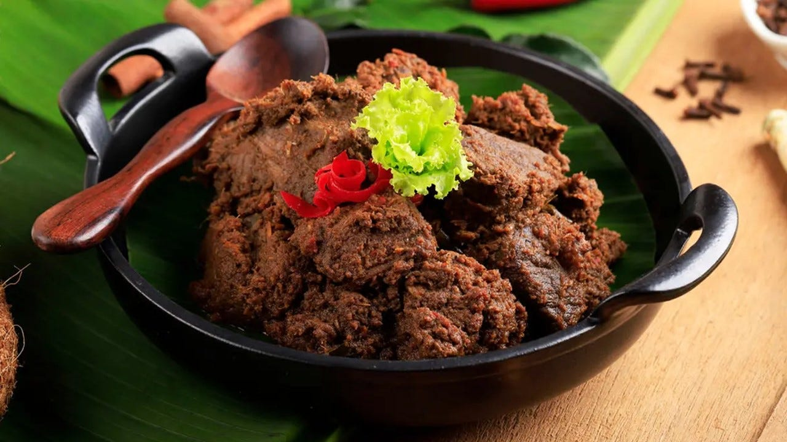

Indonesian Food


 





Indonesian Food


🔍 You can click on the picture to learn how to cook.
Learn more about Indonesian foods.
Nasi Goreng
Satay
Soto Ayam
Bakso
Mie Goreng
This is essentially fried rice, but with a distinctive Indonesian twist, often including spices, egg, vegetables, and sometimes chicken or other meats.
●2 bowls of cooked cold rice
●1 egg
●Optional:diced chicken, shrimp,
or vegetables
●2 shallots
●2 garlic cloves
●1-2 chilies
●2 tbsp cooking oil
●1 tbsp tomato ketchup
●1-2 tbsp sweet soy sauce
(kecap manis)
●Salt & pepper to taste
●Optional: fried shallots,
cucumber slices, prawn
crackers for garnish
📝1.Blend or finely chop shallots, garlic, and chili.
📝2.Heat oil in a pan and sauté the blended paste until
fragrant.
📝3.Push the paste aside, crack in the egg, scramble and
cook.
📝4.Add chicken or shrimp if using, stir-fry until
cooked.
📝5.Add rice and stir well to mix everything evenly.
📝6.Add ketchup, sweet soy sauce, salt, and pepper.
Stir-fry until the rice is well-coated and heated
through.
📝7.Serve with optional garnishes like cucumber,
fried shallots, or crackers.
Grilled skewers of marinated meat (chicken, beef, lamb, or even rabbit) are a popular street food and a staple at many restaurants.
●500g diced chicken
●10-12 skewers
●2 shallots
●4 garlic cloves
●2 chilies
●1 tsp turmeric powder
●2 tbsp sweet soy sauce
(kecap manis)
●1 tbsp lime juice
●Salt & pepper
For the Peanut Sauce
●100g roasted peanuts
(or peanut butter)
●1 garlic clove, 1 shallot
●1-2 tsp chili paste or fresh
chili
●1 tbsp sweet soy sauce
●1 tsp palm sugar
(or brown sugar)
●Water to thin the sauce
📝1.Blend the shallots, garlic, chili, turmeric, lime
juice, soy sauce, salt, and pepper into a marinade.
📝2.Marinate the chicken in the paste for 1 hour.
📝3.Skewer the chicken pieces and grill or pan-fry
until cooked and slightly charred.
📝4.For the peanut sauce: blend all sauce ingredients,
cook in a pan until thickened.
📝5.Serve satay with warm peanut sauce and optionally
rice cakes (lontong).
A salad with a peanut-based sauce, featuring a variety of vegetables, tofu, tempeh, and boiled eggs.
●Boiled vegetables:
potatoes, long beans,
bean sprouts, spinach,
corn, cabbage, chayote
●Fried tofu and tempeh
(cut into chunks)
●2 boiled eggs
●Optional: rice cakes (lontong)
●Fried shallots for garnish
Peanut Sauce:
●100g roasted peanuts
●1 garlic clove
●1 tsp chili paste
●1 tsp palm sugar
●1 tsp tamarind juice
●Salt
●Water or coconut milk
(to thin the sauce)
📝1.Boil or steam all vegetables until tender,then set
aside.
📝2.Fry tofu and tempeh until golden.
📝3.Make the peanut sauce: blend all ingredients and
cook until thickened.
📝4.Arrange vegetables, tofu, tempeh, and eggs on
a plate.
📝5.Pour the peanut sauce over the top.
📝6.Garnish with fried shallots and optionally serve
with crackers or rice cakes.
A rich, slow-cooked curry, traditionally made with beef, that's known for its tender meat and complex spices.
●500g beef (chuck or short ribs)
●400ml coconut milk
●3 cloves garlic
●2 shallots
●1 thumb ginger
●1 thumb galangal
●1 tsp turmeric
●3-5 red chilies
●1 tsp coriander powder
●Salt, sugar to taste
●Optional: lemongrass, kaffir
lime leaves,
cinnamon stick
📝1.Blend garlic, shallots, ginger, galangal, chilies,
turmeric, and coriander into a paste.
📝2.In a pot, sauté the paste until fragrant.
📝3.Add beef and cook until it's browned.
📝4.Pour in coconut milk, stir, and add optional
spices (lemongrass, lime leaves).
📝5.Simmer over low heat for 2-3 hours, stirring
occasionally, until the sauce thickens and darkens.
📝6.Cook until the oil separates and the beef is
tender and caramelized.
A flavorful chicken soup, often served with rice noodles, vegetables, and various toppings.
●500g chicken (bone-in for
better flavor)
●1 liter water
●2 cloves garlic
●2 shallots
●1 tsp turmeric powder
●1 thumb ginger
●1 stalk lemongrass (smashed)
●2 kaffir lime leaves (optional)
●Salt, pepper, sugar to taste
●Oil for sautéing
Toppings/Extras:
●Rice or vermicelli noodles
●Boiled egg
●Bean sprouts
●Shredded cabbage
●Fried shallots
●Lime wedges, sambal, crackers
📝1.Blend shallots, garlic, turmeric, and ginger into
a paste.
📝2.Sauté the paste until fragrant.
📝3.Add chicken pieces, stir-fry briefly, then pour
in water.
📝4.Add lemongrass, lime leaves, and seasonings.
Simmer until chicken is tender.
📝5.Remove chicken, shred it, and return to the pot.
📝6.Serve hot with rice or noodles, eggs, and your
preferred toppings.
Meatball soup, a popular and comforting dish with a savory broth and various additions.
●For the meatballs:
●500g ground beef
●100g tapioca flour
●1½ tsp salt
●A pinch of pepper
●1 egg
●100ml ice water
For the broth:
●1 kg beef or chicken bones
●4 garlic cloves (crushed)
●Salt and pepper
●2-3 liters water
●Celery leaves, scallions, fried
shallots
Optional toppings:
●Rice vermicelli or egg noodles
●Bok choy or cabbage
●Fried tofu or wontons (optional)
●Sambal (chili sauce)
📝1.Mix ground beef, tapioca flour, egg, salt,
pepper, and ice water until smooth.
📝2.Form into small balls and simmer in hot
water until they float (about 5-7 minutes).
📝3.Prepare broth by boiling the bones with
garlic, salt, and pepper. Let it simmer
for 1-2 hours.
📝4.Serve the meatballs with noodles, broth,
vegetables, and fried shallots on top.
Fried chicken, often marinated in a blend of spices, is another popular dish.
●1 kg chicken (cut into parts)
●5 garlic cloves
●5 shallots
●1 tsp coriander seeds
●1 tsp turmeric powder or fresh
turmeric
●1 piece galangal (crushed)
●Bay leaves (optional)
●Salt to taste
●2 cups water
●Oil for deep frying
📝1.Blend garlic, shallots, coriander seeds,
and turmeric into a paste.
📝2.In a pot, combine chicken, spice paste,
galangal, bay leaves, salt, and water.
Simmer for 15-20 minutes.
📝3.Remove the chicken and let it cool.
📝4.Deep-fry the chicken until golden
brown and crispy.
📝5.Serve with rice and sambal if desired.
Fried noodles, similar to Nasi Goreng, but with noodles instead of rice.
●1 pack egg noodles or instant
noodles
●3 garlic cloves
●3 shallots
●1 egg
●2 tbsp sweet soy sauce
(Kecap Manis)
●Salt and pepper
●Shredded chicken or prawns
(optional)
●Cabbage, carrots, spring onions
(sliced)
●Oil for frying
📝1.Boil noodles until soft, then drain and set aside.
📝2.Heat oil in a pan, stir-fry garlic and shallots.
Add the egg and scramble.
📝3.Add chicken or prawns (if using) and cook through.
📝4.Add the noodles, vegetables, and season with sweet
soy sauce, salt, and pepper.
📝5.Stir well and serve hot with optional fried
shallots and chili sauce.